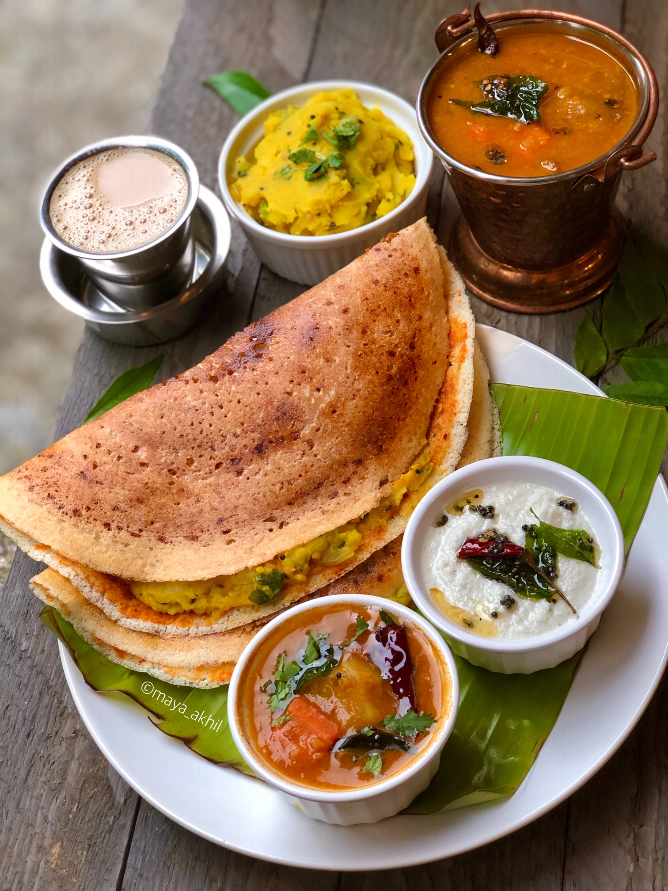

Serving Size:Serves 4
Prep Time:
20 min (+8 hrs soaking/fermenting)
Cook Time:
30 min
Total Time:
~9 hrs
Ingredients:
For Dosa:
• 2 cups rice
• 1/2 cup urad dal
• 1/4 cup poha
• 1/2 tsp fenugreek seeds
• Salt to taste
For Red Chutney:
• 4 dried red chilies
• 2 garlic cloves
• 1/4 cup coconut
• 1/2 onion
• Salt to taste
For Potato Masala:
• 4 potatoes, boiled and mashed
• 1 onion, sliced
• 1 green chili, chopped
• 1/2 tsp mustard seeds
• 1/2 tsp turmeric
• 1 sprig curry leaves
• Salt to taste
• Oil for cooking
`,
`
Instructions:
1. Soak rice, dal, poha, and fenugreek 6-8 hrs, grind to batter, ferment overnight.
2. For chutney: blend all chutney ingredients.
3. For masala: sauté mustard, curry leaves, onion, chili, turmeric, add potatoes, salt.
4. Spread dosa batter thin, add chutney, masala, fold and cook till golden.
5. Serve hot with sambar and coconut chutney.`)">
Mysore Masala Dosa